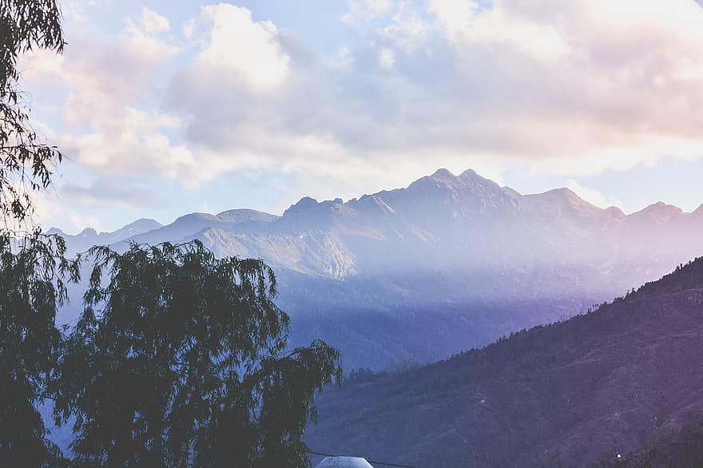

Bhutan is a landlocked country in the Eastern Himalayas, located in South Asia between China and India. It is a mountainous country.
In a world that is always on the go, Bhutan provides sanctuary. Here, you can find earthly pleasures: archery and age-old crafts, dishes of home-made cheese and fearsomely hot chillies, breathtaking treks and restorative hot-stone baths.
It offers rich culture, untouched nature, ancient ruins, incredible architecture and landscapes, but between the fluttering prayer flags dotting green hills you can glimpse a different Bhutan. Bhutan has the power to bewitch even the most jaded traveler.
It is a place to experience and feel a warmth that will stay with you for lifelong. It evokes a sense of emotion that retains its opacity to keep you hooked. Bhutan is surprising and its traditions are visible.
The most part of your journey to Paro Airport in Bhutan will be overlooking the enigmatic snowy mountain calling you to explore them.
Bhutan is blessed with hilltop monasteries that brings out the peace which you desire to have during your visit.
These monasteries are century old and are still strong in terms of construction and solace which is offered.
Some of these monasteries are listed in the UNESCO Heritage List and introduces to the long-lasting religion.
Masked people, colorful clothes and music are enough to keep you hooked and create interests.
Then there are textiles and handicrafts that showcase the true art of the people here.
Bhutan is not only about festivals and monasteries, but also of thrilling mountain activities, river rafting and archery competitions which are the part of Bhutan travel.
So pack your bags and head to this happy country, to visit the most awaited tourist places in Bhutan.
Just Visited this Amazing place
One of the best places that I've been to in a very long time
Download App for Android and IOS Mobile Phone


Witness Bhutan
Copyright 2022 - K4JS